01ពាក្យបាលី · Everyday Pali wordsមាតា/បិតា
«មាតា» mother «បិតា» father (បាលី)។ និយាយធម្មតា៖ ម្តាយ ឪពុក។
មាតា/បិតា are the formal Pali for mother/father; daily speech uses ម្តាយ/ឪពុក.
Pali & Sanskrit words in Khmer · មេរៀនទី ១១ · Lesson 11 of ភាសាខ្មែរ កម្រិត ១
ភាសាខ្មែរយកពាក្យបាលី-សំស្រ្កឹតច្រើន។ ពាក្យទាំងនេះមាន «ៈ» «ឌ្ឍ» «ជ្ញ» ដែលមិនសូវជួបក្នុងពាក្យខ្មែរធម្មតា។
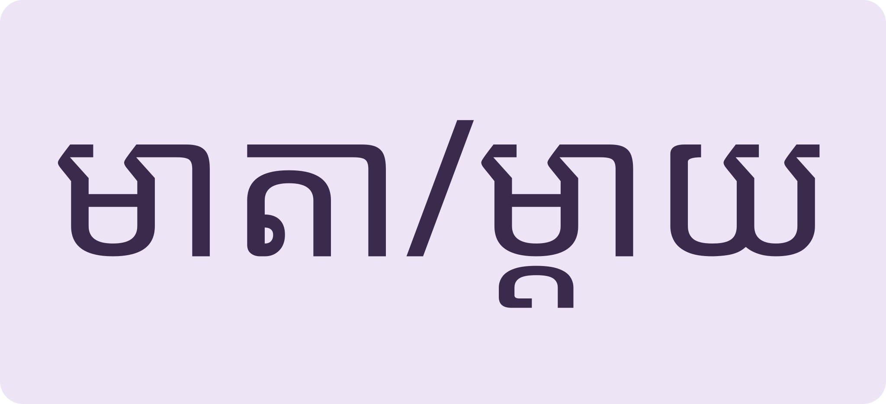
ពីរកម្រិត ម្នាក់មនុស្សTwo registers, one meaning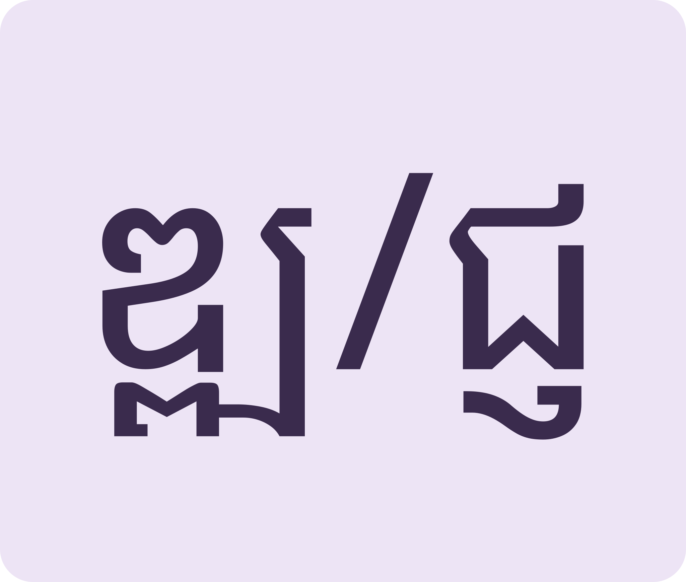
ក្រុមអក្សរពិសេសSpecial clusters to recognise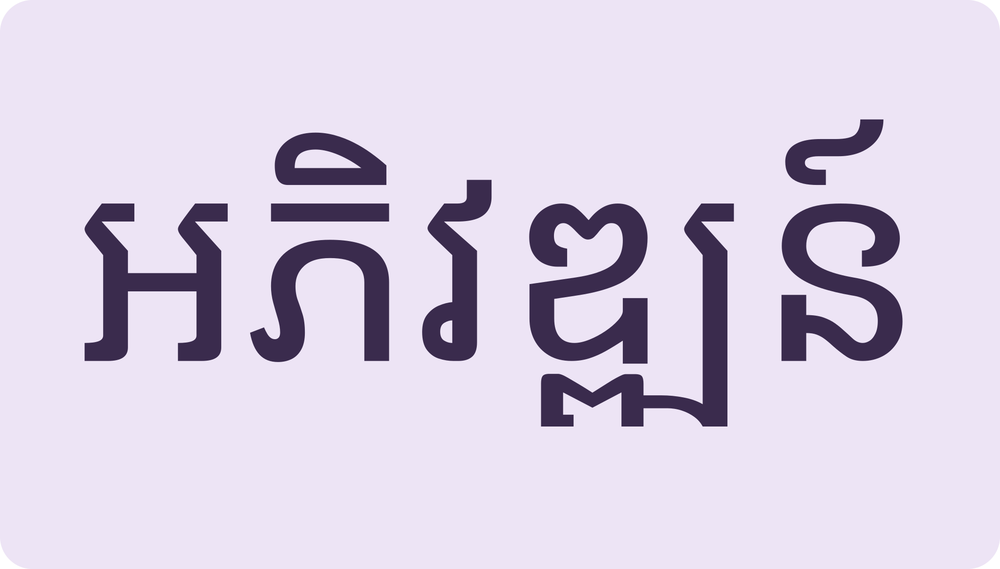
ពាក្យផ្លូវការក្នុងព័ត៌មានFormal words fill the newsPali words at home, Sanskrit words in news and offices, then disaster vocabulary.
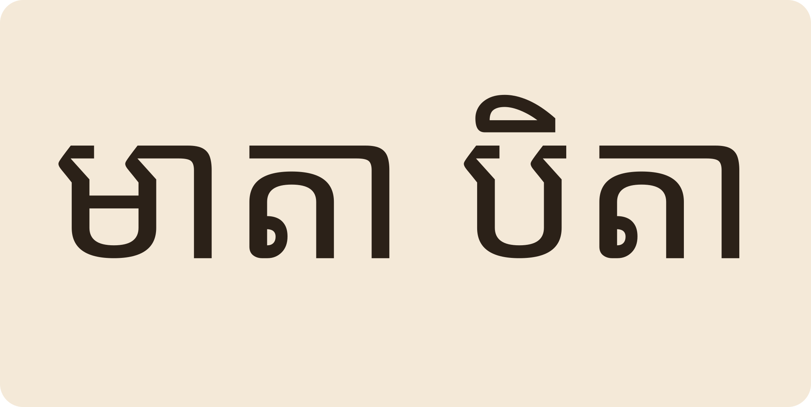
Space listen · ← → move · K show text
«មាតា» mother «បិតា» father (បាលី)។ និយាយធម្មតា៖ ម្តាយ ឪពុក។
មាតា/បិតា are the formal Pali for mother/father; daily speech uses ម្តាយ/ឪពុក.
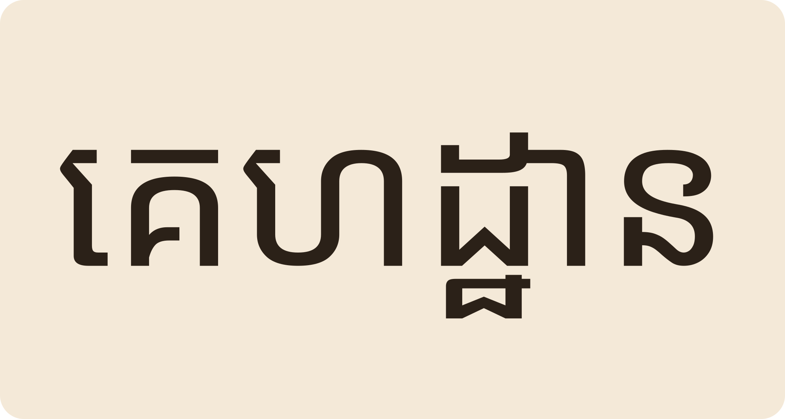
«គេហដ្ឋាន» home (បាលី)។ យើងត្រូវសម្អាតគេហដ្ឋានទទួលទេវតាឆ្នាំថ្មី។
គេហដ្ឋាន “home”: we clean the house to welcome the New Year angel.
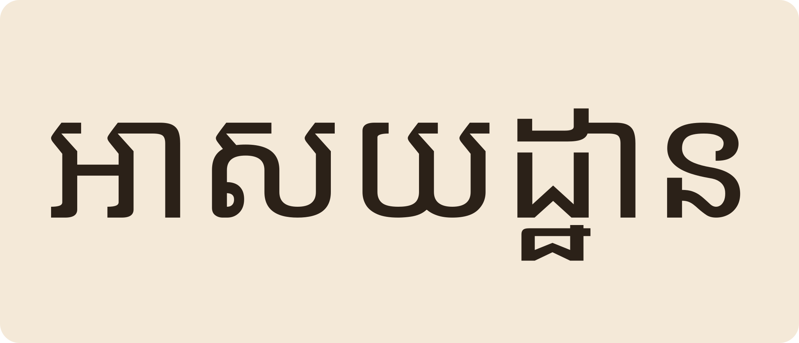
«អាសយដ្ឋាន» address។ សរសេរឈ្មោះ និងអាសយដ្ឋានលើ-envelope។
អាសយដ្ឋាន “address” — write name and address on the envelope.
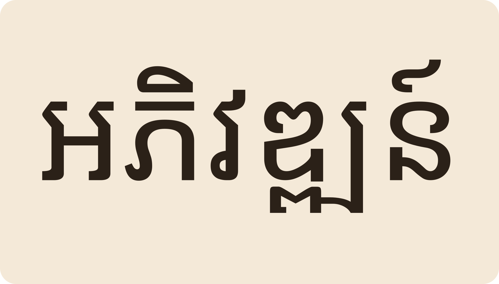
«អភិវឌ្ឍន៍» development។ កម្ពុជាមានការអភិវឌ្ឍន៍លើគ្រប់វិស័យ។
អភិវឌ្ឍន៍ “development”. Cambodia is developing in every sector.
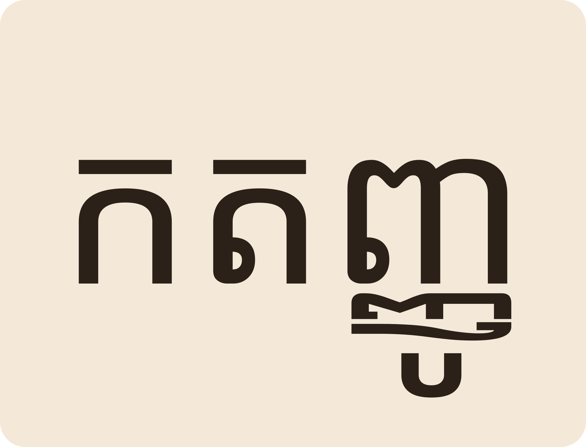
«កតញ្ញូ» grateful។ កតញ្ញូចំពោះឪពុកម្តាយ និងគ្រូបាអាចារ្យ។
កតញ្ញូ “grateful” — toward parents and teachers.
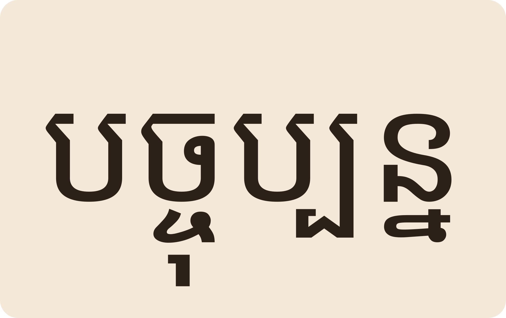
«បច្ចុប្បន្ន» present time «អនាគត» future «អតីត» past។
បច្ចុប្បន្ន the present, អនាគត the future, អតីត the past.
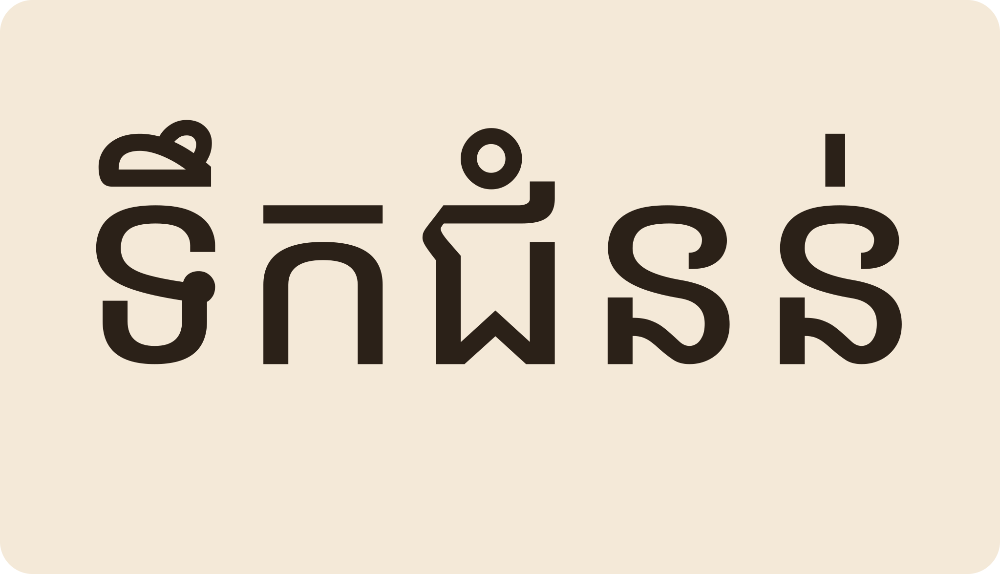
ស្ទើររាល់ឆ្នាំ កម្ពុជាជួបគ្រោះធម្មជាតិ ទឹកជំនន់ និងគ្រោះរាំងស្ងួត។
Almost every year Cambodia faces natural disasters: floods and droughts.
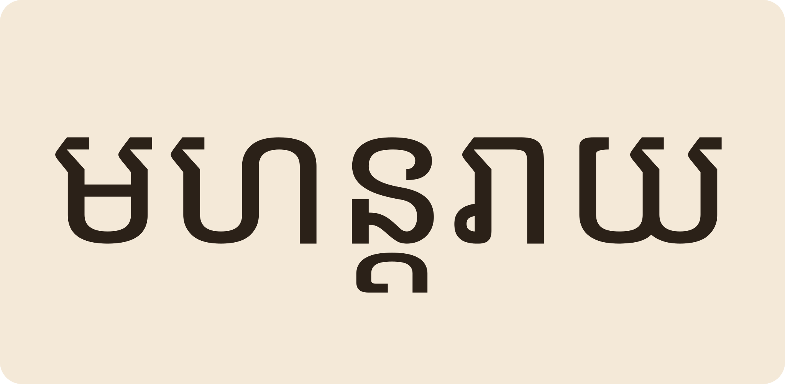
«មហន្តរាយ» great disaster។ «ព្យុះ» storm ខ្យល់បក់បោកខ្លាំង។
មហន្តរាយ “catastrophe”; ព្យុះ “storm” — wind that hurls with force.
បាទ។ «មរណៈ» death «មរតក» inheritance (របស់ទុកពីអ្នកស្លាប់)។ ឬ សរសេរ «មរទក» ខុស។
Yes: មរណៈ death, មរតក inheritance (what the deceased leaves). Spelling it មរទក is wrong.
អាន «អ៎វៈយ៎ៈវ៎ះ» ស្រាលៗ មានន័យថា រូបកាយ។
Lightly: “ʔɑvɪəʔveă” — the body, its limbs.
«ទស្សនៈ» opinion «ទស្សនា» to view (ទស្សនាវដ្តី magazine, ទូរទស្សន៍ TV)។
ទស្សនៈ = a viewpoint; ទស្សនា = to view: ទស្សនាវដ្តី magazine, ទូរទស្សន៍ television.
របស់ដែលរាំងខាងមុខ ធ្វើឱ្យពិបាកទៅមុខ obstacle។
Something blocking the way — an obstacle.
«គ្រោះរាំងស្ងួត» drought។ «គ្រោះថ្នាក់» accident/danger។
គ្រោះរាំងស្ងួត = drought; គ្រោះថ្នាក់ = accident / danger.
Tap a word's play button to hear it. Hide one side, then recall it before you tap to check.
«មាតា» mother «បិតា» father (បាលី)។ និយាយធម្មតា៖ ម្តាយ ឪពុក។ «គេហដ្ឋាន» home (បាលី)។ យើងត្រូវសម្អាតគេហដ្ឋានទទួលទេវតាឆ្នាំថ្មី។ «អាសយដ្ឋាន» address។ សរសេរឈ្មោះ និងអាសយដ្ឋានលើ-envelope។
មាតា/បិតា are the formal Pali for mother/father; daily speech uses ម្តាយ/ឪពុក. គេហដ្ឋាន “home”: we clean the house to welcome the New Year angel. អាសយដ្ឋាន “address” — write name and address on the envelope.
«អភិវឌ្ឍន៍» development។ កម្ពុជាមានការអភិវឌ្ឍន៍លើគ្រប់វិស័យ។ «កតញ្ញូ» grateful។ កតញ្ញូចំពោះឪពុកម្តាយ និងគ្រូបាអាចារ្យ។ «បច្ចុប្បន្ន» present time «អនាគត» future «អតីត» past។
អភិវឌ្ឍន៍ “development”. Cambodia is developing in every sector. កតញ្ញូ “grateful” — toward parents and teachers. បច្ចុប្បន្ន the present, អនាគត the future, អតីត the past.
ស្ទើររាល់ឆ្នាំ កម្ពុជាជួបគ្រោះធម្មជាតិ ទឹកជំនន់ និងគ្រោះរាំងស្ងួត។ «មហន្តរាយ» great disaster។ «ព្យុះ» storm ខ្យល់បក់បោកខ្លាំង។
Almost every year Cambodia faces natural disasters: floods and droughts. មហន្តរាយ “catastrophe”; ព្យុះ “storm” — wind that hurls with force.
Q. «មរតក» និង «មរណៈ» ពាក់ព័ន្ធគ្នាទេ?
Q. Are មរតក and មរណៈ related?
A. បាទ។ «មរណៈ» death «មរតក» inheritance (របស់ទុកពីអ្នកស្លាប់)។ ឬ សរសេរ «មរទក» ខុស។
A. Yes: មរណៈ death, មរតក inheritance (what the deceased leaves). Spelling it មរទក is wrong.
Q. «អវយវៈ» អានដូចម្តេច?
Q. How do you read អវយវៈ?
A. អាន «អ៎វៈយ៎ៈវ៎ះ» ស្រាលៗ មានន័យថា រូបកាយ។
A. Lightly: “ʔɑvɪəʔveă” — the body, its limbs.
Q. «ទស្សនៈ» និង «ទស្សនា» ខុសគ្នាយ៉ាងណា?
Q. Difference between ទស្សនៈ and ទស្សនា?
A. «ទស្សនៈ» opinion «ទស្សនា» to view (ទស្សនាវដ្តី magazine, ទូរទស្សន៍ TV)។
A. ទស្សនៈ = a viewpoint; ទស្សនា = to view: ទស្សនាវដ្តី magazine, ទូរទស្សន៍ television.
Q. «ឧបសគ្គ» ជាអ្វី?
Q. What is an ឧបសគ្គ?
A. របស់ដែលរាំងខាងមុខ ធ្វើឱ្យពិបាកទៅមុខ obstacle។
A. Something blocking the way — an obstacle.
Q. «រាំងស្ងួត» និង «គ្រោះ» ប្រើជាគ្នាយ៉ាងណា?
Q. How do រាំងស្ងួត and គ្រោះ combine?
A. «គ្រោះរាំងស្ងួត» drought។ «គ្រោះថ្នាក់» accident/danger។
A. គ្រោះរាំងស្ងួត = drought; គ្រោះថ្នាក់ = accident / danger.
មានគ្រោះថ្នាក់នៅទីនេះ!
There's danger here!
សូមជួយ យើងត្រូវជម្លៀស។
Help — we need to evacuate.
Say it in your head first, then tap the box to check.